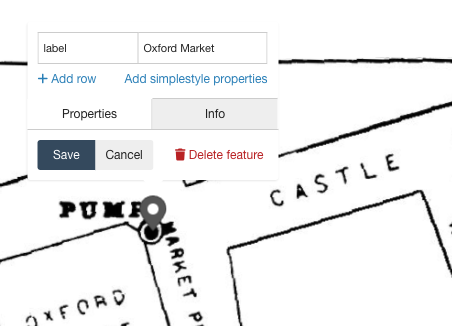
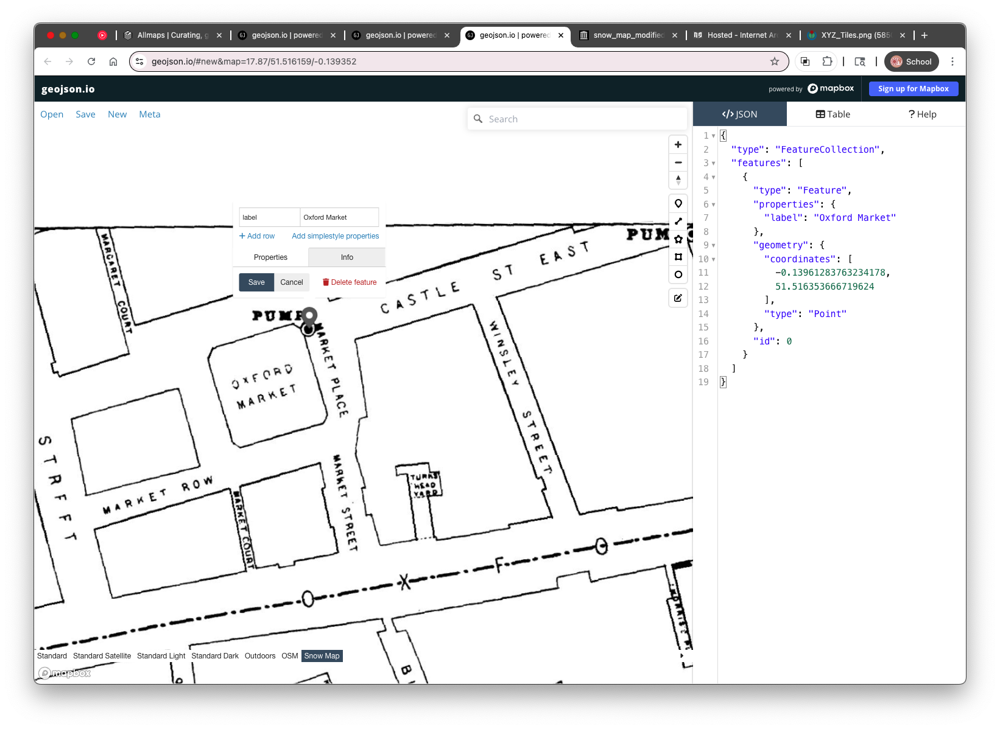
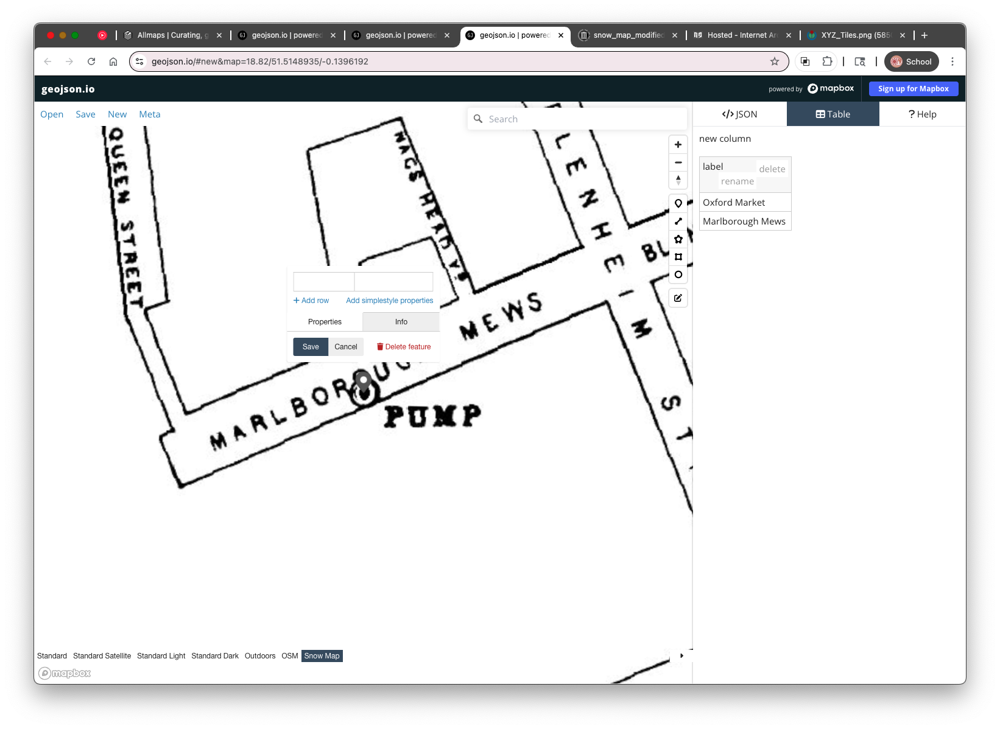
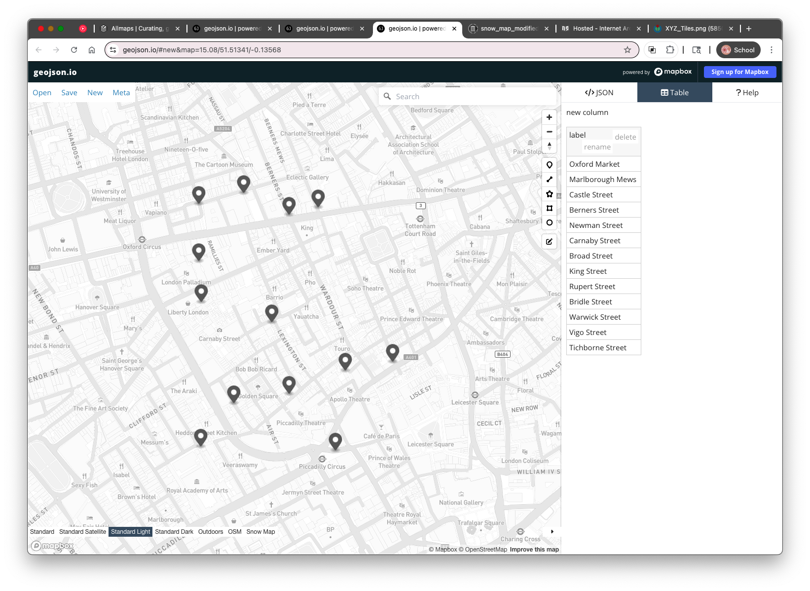

4. Digitizing the Water Pumps from the Snow Map
Now that the John Snow cholera map is loaded as a raster tile layer in geojson.io, you’re ready to begin digitizing the water pumps. Each pump is represented by a small black dot inside a larger circle — like a target — on the historic map. We’ll add a point feature for each pump and label it with the name of the nearest street using a property called label.
Step-by-Step: Add a Water Pump Feature
- Make sure the Snow map tile layer is loaded If you can't see the historic map, revisit Section 3 to reload the XYZ tile URL and zoom into Soho, London.
- In the geojson.io toolbar (above the map), click the Point tool (a small pin icon)
- Click directly on a water pump symbol in the Snow map to add a point
- Click on the newly created point.
A popup will appear for that feature. In the popup:
- Click in the first cell and name the property
label - In the value field (second cell), type the name of the street the pump is located on (e.g.,
Oxford Market) - Click Save
- Click in the first cell and name the property


Tips for Digitizing Accurately
- Zoom in closely to make sure the point is centered on the pump symbol
- Use street names printed on the historic map, even if they differ from modern ones
- Avoid overlapping points or double-clicking by accident
Repeat for Each Pump
Continue adding a new point for each water pump shown on the map. For each one:
- Use the Point tool
- Place it on the pump symbol
- Add or update the
labelproperty with the correct street name
You can update labels as you digitize (each new point gets an empty row in the Tabel view). The Table view is also useful for managing properties especially if you need to fix typos or check for missing data.


Once all thirteen (13) pumps are digitized and labeled, you can change the basemap to one of the choices at teh bottom of the map and view your first historical spatial dataset, in a modern spatial context! In the next section, we’ll learn how to save and export your data from geojson.io as a .geojson file.